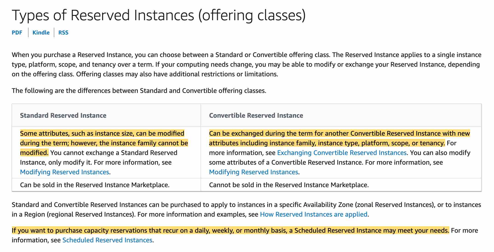
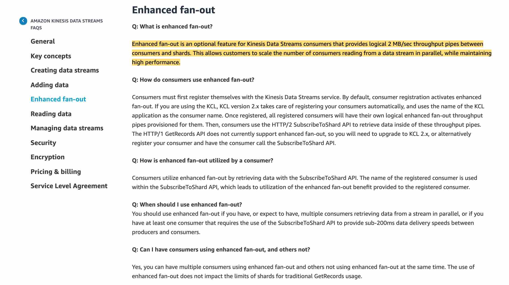
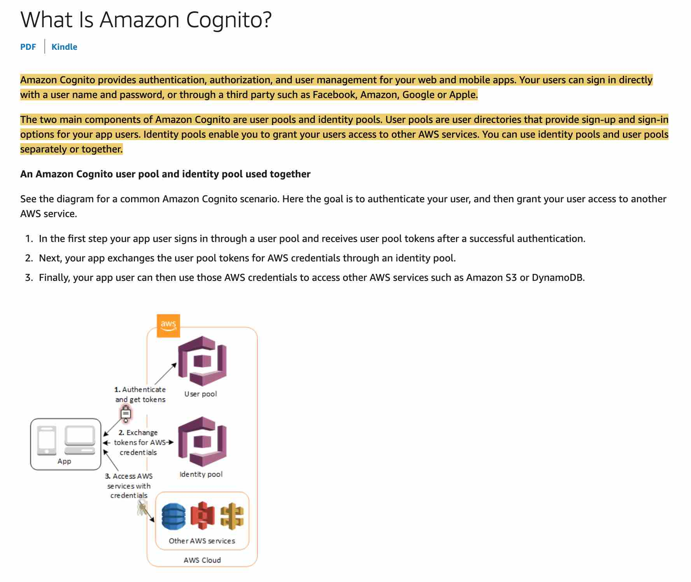

Practice Test #2 (AWS Certified Developer Associate - DVA-C02) - Results
A developer wants to package the code and dependencies for the application-specific Lambda functions as container images to be hosted on Amazon Elastic Container Registry (ECR).
Which of the following options are correct for the given requirement? (Select two)
A developer is looking at establishing access control for an API that connects to a Lambda function downstream.
Which of the following represents a mechanism that CANNOT be used for authenticating with the API Gateway?
A startup has been experimenting with DynamoDB in its new test environment. The development team has discovered that some of the write operations have been overwriting existing items that have the specified primary key. This has messed up their data, leading to data discrepancies.
Which DynamoDB write option should be selected to prevent this kind of overwriting?
The development team at an e-commerce company completed the last deployment for their application at a reduced capacity because of the deployment policy. The application took a performance hit because of the traffic spike due to an on-going sale.
Which of the following represents the BEST deployment option for the upcoming application version such that it maintains at least the FULL capacity of the application and MINIMAL impact of failed deployment?
A CRM application is hosted on Amazon EC2 instances with the database tier using DynamoDB. The customers have raised privacy and security concerns regarding sending and receiving data across the public internet.
As a developer associate, which of the following would you suggest as an optimal solution for providing communication between EC2 instances and DynamoDB without using the public internet?
As a Developer, you are given a document written in YAML that represents the architecture of a serverless application. The first line of the document contains Transform: 'AWS::Serverless-2016-10-31'.
What does the Transform section in the document represent?
Other than the Resources section, which of the following sections in a Serverless Application Model (SAM) Template is mandatory?
A pharmaceutical company runs their database workloads on Provisioned IOPS SSD (io1) volumes.
As a Developer Associate, which of the following options would you identify as an INVALID configuration for io1 EBS volume types?
A business has purchased one m4.xlarge Reserved Instance but it has used three m4.xlarge instances concurrently for an hour.
As a Developer, explain how the instances are charged?
All instances are charged at one hour of On-Demand Instance usage
One instance is charged at one hour of Reserved Instance usage and the other two instances are charged at two hours of On-Demand usage
One instance is charged at one hour of On-Demand usage and the other two instances are charged at two hours of Reserved Instance usage
All instances are charged at one hour of Reserved Instance usage
Correct option:
All Reserved Instances provide you with a discount compared to On-Demand pricing.
One instance is charged at one hour of Reserved Instance usage and the other two instances are charged at two hours of On-Demand usage
A Reserved Instance billing benefit can apply to a maximum of 3600 seconds (one hour) of instance usage per clock-hour. You can run multiple instances concurrently, but can only receive the benefit of the Reserved Instance discount for a total of 3600 seconds per clock-hour; instance usage that exceeds 3600 seconds in a clock-hour is billed at the On-Demand rate.
Please review this note on the EC2 Reserved Instance types:

via - https://docs.aws.amazon.com/AWSEC2/latest/UserGuide/reserved-instances-types.htmlHigh Level Overview of EC2 Instance Purchase Options:

Incorrect options:
All instances are charged at one hour of Reserved Instance usage - This is incorrect.
All instances are charged at one hour of On-Demand Instance usage - This is incorrect.
One instance is charged at one hour of On-Demand usage and the other two instances are charged at two hours of Reserved Instance usage - This is incorrect. If multiple eligible instances are running concurrently, the Reserved Instance billing benefit is applied to all the instances at the same time up to a maximum of 3600 seconds in a clock-hour; thereafter, On-Demand rates apply.
Reference:
https://docs.aws.amazon.com/AWSEC2/latest/UserGuide/concepts-reserved-instances-application.html
A company needs a version control system for their fast development lifecycle with incremental changes, version control, and support to existing Git tools.
Which AWS service will meet these requirements?
A company wants to share information with a third party via an HTTP API endpoint managed by the third party. The company has the necessary API key to access the endpoint and the integration of the API key with the company's application code must not impact the application's performance.
What is the most secure approach?
An application running on EC2 instances processes messages from an SQS queue. However, sometimes the messages are not processed and they end up in errors. These messages need to be isolated for further processing and troubleshooting.
Which of the following options will help achieve this?
A university has created a student portal that is accessible through a smartphone app and web application. The smartphone app is available in both Android and IOS and the web application works on most major browsers. Students will be able to do group study online and create forum questions. All changes made via smartphone devices should be available even when offline and should synchronize with other devices.
Which of the following AWS services will meet these requirements?
A company runs its flagship application on a fleet of Amazon EC2 instances. After misplacing a couple of private keys from the SSH key pairs, they have decided to re-use their SSH key pairs for the different instances across AWS Regions.
As a Developer Associate, which of the following would you recommend to address this use-case?
A serverless application built on AWS processes customer orders 24/7 using an AWS Lambda function and communicates with an external vendor's HTTP API for payment processing. The development team wants to notify the support team in near real-time using an existing Amazon Simple Notification Service (Amazon SNS) topic, but only when the external API error rate exceeds 5% of the total transactions processed in an hour.
As an AWS Certified Developer Associate, which option will you suggest as the most efficient solution?
A junior developer has been asked to configure access to an Amazon EC2 instance hosting a web application. The developer has configured a new security group to permit incoming HTTP traffic from 0.0.0.0/0 and retained any default outbound rules. A custom Network Access Control List (NACL) connected with the instance's subnet is configured to permit incoming HTTP traffic from 0.0.0.0/0 and retained any default outbound rules.
Which of the following solutions would you suggest if the EC2 instance needs to accept and respond to requests from the internet?
A development team is building a game where players can buy items with virtual coins. For every virtual coin bought by a user, both the players table as well as the items table in DynamodDB need to be updated simultaneously using an all-or-nothing operation.
As a developer associate, how will you implement this functionality?
As an AWS certified developer associate, you are working on an AWS CloudFormation template that will create resources for a company's cloud infrastructure. Your template is composed of three stacks which are Stack-A, Stack-B, and Stack-C. Stack-A will provision a VPC, a security group, and subnets for public web applications that will be referenced in Stack-B and Stack-C.
After running the stacks you decide to delete them, in which order should you do it?
A development team is working on an AWS Lambda function that accesses DynamoDB. The Lambda function must do an upsert, that is, it must retrieve an item and update some of its attributes or create the item if it does not exist.
Which of the following represents the solution with MINIMUM IAM permissions that can be used for the Lambda function to achieve this functionality?
The development team at a HealthCare company has deployed EC2 instances in AWS Account A. These instances need to access patient data with Personally Identifiable Information (PII) on multiple S3 buckets in another AWS Account B.
As a Developer Associate, which of the following solutions would you recommend for the given use-case?
As a Senior Developer, you are tasked with creating several API Gateway powered APIs along with your team of developers. The developers are working on the API in the development environment, but they find the changes made to the APIs are not reflected when the API is called.
As a Developer Associate, which of the following solutions would you recommend for this use-case?
You are a developer working on a web application written in Java and would like to use AWS Elastic Beanstalk for deployment because it would handle deployment, capacity provisioning, load balancing, auto-scaling, and application health monitoring. In the past, you connected to your provisioned instances through SSH to issue configuration commands. Now, you would like a configuration mechanism that automatically applies settings for you.
Which of the following options would help do this?
A media publishing company is using Amazon EC2 instances for running their business-critical applications. Their IT team is looking at reserving capacity apart from savings plans for the critical instances.
As a Developer Associate, which of the following reserved instance types you would select to provide capacity reservations?
A data analytics company is processing real-time Internet-of-Things (IoT) data via Kinesis Producer Library (KPL) and sending the data to a Kinesis Data Streams driven application. The application has halted data processing because of a ProvisionedThroughputExceeded exception.
Which of the following actions would help in addressing this issue? (Select two)
Use Amazon Kinesis Agent instead of Kinesis Producer Library (KPL) for sending data to Kinesis Data Streams
Use Amazon SQS instead of Kinesis Data Streams
Configure the data producer to retry with an exponential backoff
Increase the number of shards within your data streams to provide enough capacity
Use Kinesis enhanced fan-out for Kinesis Data Streams
Correct option:
Configure the data producer to retry with an exponential backoff
Increase the number of shards within your data streams to provide enough capacity
Amazon Kinesis Data Streams enables you to build custom applications that process or analyze streaming data for specialized needs. You can continuously add various types of data such as clickstreams, application logs, and social media to an Amazon Kinesis data stream from hundreds of thousands of sources.
How Kinesis Data Streams Work

The capacity limits of an Amazon Kinesis data stream are defined by the number of shards within the data stream. The limits can be exceeded by either data throughput or the number of PUT records. While the capacity limits are exceeded, the put data call will be rejected with a ProvisionedThroughputExceeded exception.
If this is due to a temporary rise of the data stream’s input data rate, retry (with exponential backoff) by the data producer will eventually lead to the completion of the requests.
If this is due to a sustained rise of the data stream’s input data rate, you should increase the number of shards within your data stream to provide enough capacity for the put data calls to consistently succeed.
Incorrect options:
Use Amazon Kinesis Agent instead of Kinesis Producer Library (KPL) for sending data to Kinesis Data Streams - Kinesis Agent works with data producers. Using Kinesis Agent instead of KPL will not help as the constraint is the capacity limit of the Kinesis Data Stream.
Use Amazon SQS instead of Kinesis Data Streams - This is a distractor as using SQS will not help address the ProvisionedThroughputExceeded exception for the Kinesis Data Stream. This option does not address the issues in the use-case.
Use Kinesis enhanced fan-out for Kinesis Data Streams - You should use enhanced fan-out if you have, or expect to have, multiple consumers retrieving data from a stream in parallel. Therefore, using enhanced fan-out will not help address the ProvisionedThroughputExceeded exception as the constraint is the capacity limit of the Kinesis Data Stream.
Please review this note for more details on enhanced fan-out for Kinesis Data Streams:

via - https://aws.amazon.com/kinesis/data-streams/faqs/References:
You have launched several AWS Lambda functions written in Java. A new requirement was given that over 1MB of data should be passed to the functions and should be encrypted and decrypted at runtime.
Which of the following methods is suitable to address the given use-case?
A developer working with EC2 Windows instance has installed Kinesis Agent for Windows to stream JSON-formatted log files to Amazon Simple Storage Service (S3) via Amazon Kinesis Data Firehose. The developer wants to understand the sink type capabilities of Kinesis Firehose.
Which of the following sink types is NOT supported by Kinesis Firehose.
Your team lead has asked you to learn AWS CloudFormation to create a collection of related AWS resources and provision them in an orderly fashion. You decide to provide AWS-specific parameter types to catch invalid values.
When specifying parameters which of the following is not a valid Parameter type?
A developer wants to securely store and retrieve various types of variables, such as remote API authentication information, API URL, and related credentials across different environments of an application deployed on Amazon Elastic Container Service (Amazon ECS).
What would be the best approach that needs minimal modifications in the application code?
A company wants to automate its order fulfillment and inventory tracking workflow. Starting from order creation to updating inventory to shipment, the entire process has to be tracked, managed and updated automatically.
Which of the following would you recommend as the most optimal solution for this requirement?
After a code review, a developer has been asked to make his publicly accessible S3 buckets private, and enable access to objects with a time-bound constraint.
Which of the following options will address the given use-case?
An Accounting firm extensively uses Amazon EBS volumes for persistent storage of application data of Amazon EC2 instances. The volumes are encrypted to protect the critical data of the clients. As part of managing the security credentials, the project manager has come across a policy snippet that looks like the following:
{
"Version": "2012-10-17",
"Statement": [
{
"Sid": "Allow for use of this Key",
"Effect": "Allow",
"Principal": {
"AWS": "arn:aws:iam::111122223333:role/UserRole"
},
"Action": [
"kms:GenerateDataKeyWithoutPlaintext",
"kms:Decrypt"
],
"Resource": "*"
},
{
"Sid": "Allow for EC2 Use",
"Effect": "Allow",
"Principal": {
"AWS": "arn:aws:iam::111122223333:role/UserRole"
},
"Action": [
"kms:CreateGrant",
"kms:ListGrants",
"kms:RevokeGrant"
],
"Resource": "*",
"Condition": {
"StringEquals": {
"kms:ViaService": "ec2.us-west-2.amazonaws.com"
}
}
]
}
Which of the following options are correct regarding the policy?
While troubleshooting, a developer realized that the Amazon EC2 instance is unable to connect to the Internet using the Internet Gateway.
Which conditions should be met for Internet connectivity to be established? (Select two)
A developer in your company was just promoted to Team Lead and will be in charge of code deployment on EC2 instances via AWS CodeCommit and AWS CodeDeploy. Per the new requirements, the deployment process should be able to change permissions for deployed files as well as verify the deployment success.
Which of the following actions should the new Developer take?
A company uses Amazon Simple Email Service (SES) to cost-effectively send susbscription emails to the customers. Intermittently, the SES service throws the error: Throttling – Maximum sending rate exceeded.
As a developer associate, which of the following would you recommend to fix this issue?
A company uses AWS CodeDeploy to deploy applications from GitHub to EC2 instances running Amazon Linux. The deployment process uses a file called appspec.yml for specifying deployment hooks. A final lifecycle event should be specified to verify the deployment success.
Which of the following hook events should be used to verify the success of the deployment?
You are a development team lead setting permissions for other IAM users with limited permissions. On the AWS Management Console, you created a dev group where new developers will be added, and on your workstation, you configured a developer profile. You would like to test that this user cannot terminate instances.
Which of the following options would you execute?
A business hosts its website on Amazon EC2 instances and employs Auto Scaling to adjust its resources according to traffic spikes. However, users globally report slow loading times because static content hosted on the EC2 instances takes too long to load, even outside of busy periods.
What pair of actions should be taken to improve the latency of the website? (Select two)
A company has a cloud system in AWS with components that send and receive messages using SQS queues. While reviewing the system you see that it processes a lot of information and would like to be aware of any limits of the system.
Which of the following represents the maximum number of messages that can be stored in an SQS queue?
A diagnostic lab stores its data on DynamoDB. The lab wants to backup a particular DynamoDB table data on Amazon S3, so it can download the S3 backup locally for some operational use.
Which of the following options is NOT feasible?
Recently in your organization, the AWS X-Ray SDK was bundled into each Lambda function to record outgoing calls for tracing purposes. When your team leader goes to the X-Ray service in the AWS Management Console to get an overview of the information collected, they discover that no data is available.
What is the most likely reason for this issue?
As an AWS Certified Developer Associate, you have been hired to work with the development team at a company to create a REST API using the serverless architecture.
Which of the following solutions will you choose to move the company to the serverless architecture paradigm?
Fargate with Lambda at the front
API Gateway exposing Lambda Functionality
Route 53 with EC2 as backend
Public-facing Application Load Balancer with ECS on Amazon EC2
Correct option:
API Gateway exposing Lambda Functionality
Amazon API Gateway is a fully managed service that makes it easy for developers to create, publish, maintain, monitor, and secure APIs at any scale. APIs act as the "front door" for applications to access data, business logic, or functionality from your backend services.
How API Gateway Works: via - https://aws.amazon.com/api-gateway/
AWS Lambda lets you run code without provisioning or managing servers. You pay only for the compute time you consume.
How Lambda function works:

API Gateway can expose Lambda functionality through RESTful APIs. Both are serverless options offered by AWS and hence the right choice for this scenario, considering all the functionality they offer.
Incorrect options:
Fargate with Lambda at the front - Lambda cannot directly handle RESTful API requests. You can invoke a Lambda function over HTTPS by defining a custom RESTful API using Amazon API Gateway. So, Fargate with Lambda as the front-facing service is a wrong combination, though both Fargate and Lambda are serverless.
Public-facing Application Load Balancer with ECS on Amazon EC2 - ECS on Amazon EC2 does not come under serverless and hence cannot be considered for this use case.
Route 53 with EC2 as backend - Amazon EC2 is not a serverless service and hence cannot be considered for this use case.
References:
A business has their test environment built on Amazon EC2 configured on General purpose SSD volume.
At which gp2 volume size will their test environment hit the max IOPS?
10.6 TiB
2.7 TiB
16 TiB
5.3 TiB
Correct option:
The performance of gp2 volumes is tied to volume size, which determines the baseline performance level of the volume and how quickly it accumulates I/O credits; larger volumes have higher baseline performance levels and accumulate I/O credits faster.
5.3 TiB - General Purpose SSD (gp2) volumes offer cost-effective storage that is ideal for a broad range of workloads. These volumes deliver single-digit millisecond latencies and the ability to burst to 3,000 IOPS for extended periods of time. Between a minimum of 100 IOPS (at 33.33 GiB and below) and a maximum of 16,000 IOPS (at 5,334 GiB and above), baseline performance scales linearly at 3 IOPS per GiB of volume size.
Maximum IOPS vs Volume Size for General Purpose SSD (gp2) volumes:

Incorrect options:
10.6 TiB - As explained above, this is an incorrect option.
16 TiB - As explained above, this is an incorrect option.
2.7 TiB - As explained above, this is an incorrect option.
Reference:
https://docs.aws.amazon.com/AWSEC2/latest/UserGuide/ebs-volume-types.html
As a Team Lead, you are expected to generate a report of the code builds for every week to report internally and to the client. This report consists of the number of code builds performed for a week, the percentage success and failure, and overall time spent on these builds by the team members. You also need to retrieve the CodeBuild logs for failed builds and analyze them in Athena.
Which of the following options will help achieve this?
A company is using a Border Gateway Protocol (BGP) based AWS VPN connection to connect from its on-premises data center to Amazon EC2 instances in the company’s account. The development team can access an EC2 instance in subnet A but is unable to access an EC2 instance in subnet B in the same VPC.
Which logs can be used to verify whether the traffic is reaching subnet B?
A pharmaceutical company uses Amazon EC2 instances for application hosting and Amazon CloudFront for content delivery. A new research paper with critical findings has to be shared with a research team that is spread across the world.
Which of the following represents the most optimal solution to address this requirement without compromising the security of the content?
A developer needs to automate software package deployment to both Amazon EC2 instances and virtual servers running on-premises, as part of continuous integration and delivery that the business has adopted.
Which AWS service should he use to accomplish this task?
An Auto Scaling group has a maximum capacity of 3, a current capacity of 2, and a scaling policy that adds 3 instances.
When executing this scaling policy, what is the expected outcome?
The development team at an analytics company is using SQS queues for decoupling the various components of application architecture. As the consumers need additional time to process SQS messages, the development team wants to postpone the delivery of new messages to the queue for a few seconds.
As a Developer Associate, which of the following solutions would you recommend to the development team?
Your company has embraced cloud-native microservices architectures. New applications must be dockerized and stored in a registry service offered by AWS. The architecture should support dynamic port mapping and support multiple tasks from a single service on the same container instance. All services should run on the same EC2 instance.
Which of the following options offers the best-fit solution for the given use-case?
The development team at a retail company is gearing up for the upcoming Thanksgiving sale and wants to make sure that the application's serverless backend running via Lambda functions does not hit latency bottlenecks as a result of the traffic spike.
As a Developer Associate, which of the following solutions would you recommend to address this use-case?
A developer is building a serverless application on AWS and wants to establish an accelerated development workflow. The workflow must allow the developer to deploy incremental changes for testing without deploying the entire application for every code commit. The developer wants to streamline the process while minimizing deployment time.
What should the developer do to meet these requirements?
The app development team at a social gaming mobile app wants to simplify the user sign up process for the app. The team is looking for a fully managed scalable solution for user management in anticipation of the rapid growth that the app foresees.
As a Developer Associate, which of the following solutions would you suggest so that it requires the LEAST amount of development effort?
Use Cognito Identity pools to facilitate sign up and user management for the mobile app
Create a custom solution using EC2 and DynamoDB to facilitate sign up and user management for the mobile app
Create a custom solution using Lambda and DynamoDB to facilitate sign up and user management for the mobile app
Use Cognito User pools to facilitate sign up and user management for the mobile app
Correct option:
Use Cognito User pools to facilitate sign up and user management for the mobile app
Amazon Cognito provides authentication, authorization, and user management for your web and mobile apps. Your users can sign in directly with a user name and password, or through a third party such as Facebook, Amazon, Google or Apple.
A user pool is a user directory in Amazon Cognito. With a user pool, your users can sign in to your web or mobile app through Amazon Cognito, or federate through a third-party identity provider (IdP). Whether your users sign-in directly or through a third party, all members of the user pool have a directory profile that you can access through an SDK.
Cognito is fully managed by AWS and works out of the box so it meets the requirements for the given use-case.

via - https://docs.aws.amazon.com/cognito/latest/developerguide/what-is-amazon-cognito.htmlIncorrect options:
Use Cognito Identity pools to facilitate sign up and user management for the mobile app - You can use Identity pools to grant your users access to other AWS services. With an identity pool, your users can obtain temporary AWS credentials to access AWS services, such as Amazon S3 and DynamoDB. Identity pools support anonymous guest users, as well as the specific identity providers that you can use to authenticate users for identity pools.
Exam Alert:
Please review the following note to understand the differences between Cognito User Pools and Cognito Identity Pools:

Create a custom solution with EC2 and DynamoDB to facilitate sign up and user management for the mobile app
Create a custom solution with Lambda and DynamoDB to facilitate sign up and user management for the mobile app
As the problem statement mentions that the solution needs to be fully managed and should require the least amount of development effort, so you cannot use EC2 or Lambda functions with DynamoDB to create a custom solution.
Reference:
https://docs.aws.amazon.com/cognito/latest/developerguide/what-is-amazon-cognito.html
What steps can a developer take to optimize the performance of a CPU-bound AWS Lambda function and ensure fast response time?
An e-commerce company manages a microservices application that receives orders from various partners through a customized API for each partner exposed via Amazon API Gateway. The orders are processed by a shared Lambda function.
How can the company notify each partner regarding the status of their respective orders in the most efficient manner, without affecting other partners' orders? Also, the solution should be scalable to accommodate new partners with minimal code changes required.
As a senior architect, you are responsible for the development, support, maintenance, and implementation of all database applications written using NoSQL technology. A new project demands a throughput requirement of 10 strongly consistent reads per second of 6KB in size each.
How many read capacity units will you need when configuring your DynamoDB table?
You create an Auto Scaling group to work with an Application Load Balancer. The scaling group is configured with a minimum size value of 5, a maximum value of 20, and the desired capacity value of 10. One of the 10 EC2 instances has been reported as unhealthy.
Which of the following actions will take place?
A social gaming application supports the transfer of gift vouchers between users. When a user hits a certain milestone on the leaderboard, they earn a gift voucher that can be redeemed or transferred to another user. The development team wants to ensure that this transfer is captured in the database such that the records for both users are either written successfully with the new gift vouchers or the status quo is maintained.
Which of the following solutions represent the best-fit options to meet the requirements for the given use-case? (Select two)
The technology team at an investment bank uses DynamoDB to facilitate high-frequency trading where multiple trades can try and update an item at the same time.
Which of the following actions would make sure that only the last updated value of any item is used in the application?
A company has created an Amazon S3 bucket that holds customer data. The team lead has just enabled access logging to this bucket. The bucket size has grown substantially after starting access logging. Since no new files have been added to the bucket, the perplexed team lead is looking for an answer.
Which of the following reasons explains this behavior?
Consider an application that enables users to store their mobile phone images in the cloud and supports tens of thousands of users. The application should utilize an Amazon API Gateway REST API that leverages AWS Lambda functions for photo processing while storing photo details in Amazon DynamoDB. The application should allow users to create an account, upload images, and retrieve previously uploaded images, with images ranging in size from 500 KB to 5 MB.
How will you design the application with the least operational overhead?
A Developer is configuring Amazon EC2 Auto Scaling group to scale dynamically.
Which metric below is NOT part of Target Tracking Scaling Policy?
While defining a business workflow as state machine on AWS Step Functions, a developer has configured several states.
Which of the following would you identify as the state that represents a single unit of work performed by a state machine?
The development team at a multi-national retail company wants to support trusted third-party authenticated users from the supplier organizations to create and update records in specific DynamoDB tables in the company's AWS account.
As a Developer Associate, which of the following solutions would you suggest for the given use-case?
Use Cognito Identity pools to enable trusted third-party authenticated users to access DynamoDB
Use Cognito User pools to enable trusted third-party authenticated users to access DynamoDB
Create a new IAM group in the company's AWS account for each of the third-party authenticated users from the supplier organizations. The users can then use the IAM group credentials to access DynamoDB
Create a new IAM user in the company's AWS account for each of the third-party authenticated users from the supplier organizations. The users can then use the IAM user credentials to access DynamoDB
Correct option:
Use Cognito Identity pools to enable trusted third-party authenticated users to access DynamoDB
Amazon Cognito identity pools (federated identities) enable you to create unique identities for your users and federate them with identity providers. With an identity pool, you can obtain temporary, limited-privilege AWS credentials to access other AWS services. Amazon Cognito identity pools support the following identity providers:
Public providers: Login with Amazon (Identity Pools), Facebook (Identity Pools), Google (Identity Pools), Sign in with Apple (Identity Pools).
Amazon Cognito User Pools
Open ID Connect Providers (Identity Pools)
SAML Identity Providers (Identity Pools)
Developer Authenticated Identities (Identity Pools)
Exam Alert:
Please review the following note to understand the differences between Cognito User Pools and Cognito Identity Pools:

Incorrect options:
Use Cognito User pools to enable trusted third-party authenticated users to access DynamoDB - A user pool is a user directory in Amazon Cognito. With a user pool, your users can sign in to your web or mobile app through Amazon Cognito, or federate through a third-party identity provider (IdP). Cognito User Pools cannot be used to obtain temporary AWS credentials to access AWS services, such as Amazon S3 and DynamoDB.
Create a new IAM user in the company's AWS account for each of the third-party authenticated users from the supplier organizations. The users can then use the IAM user credentials to access DynamoDB
Create a new IAM group in the company's AWS account for each of the third-party authenticated users from the supplier organizations. The users can then use the IAM group credentials to access DynamoDB
Both these options involve setting up IAM resources such as IAM users or IAM groups just to provide access to DynamoDB tables. As the users are already trusted third-party authenticated users, Cognito Identity Pool can address this use-case in an elegant way.
Reference:
https://docs.aws.amazon.com/cognito/latest/developerguide/what-is-amazon-cognito.html
A developer with access to the AWS Management Console terminated an instance in the us-east-1a availability zone. The attached EBS volume remained and is now available for attachment to other instances. Your colleague launches a new Linux EC2 instance in the us-east-1e availability zone and is attempting to attach the EBS volume. Your colleague informs you that it is not possible and need your help.
Which of the following explanations would you provide to them?
A developer is defining the signers that can create signed URLs for their Amazon CloudFront distributions.
Which of the following statements should the developer consider while defining the signers? (Select two)